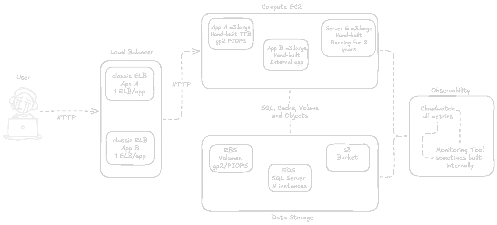
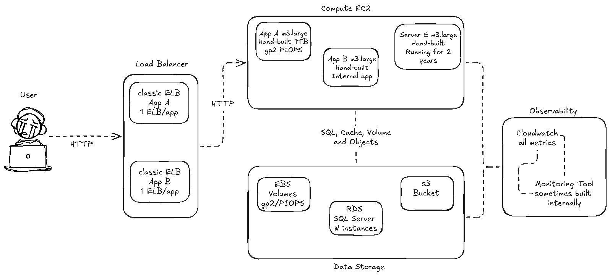
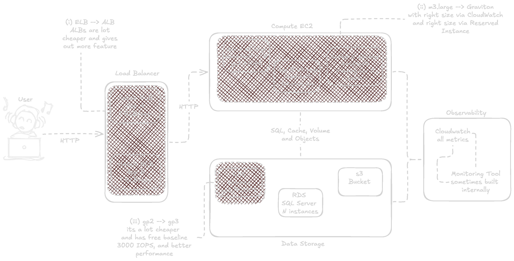
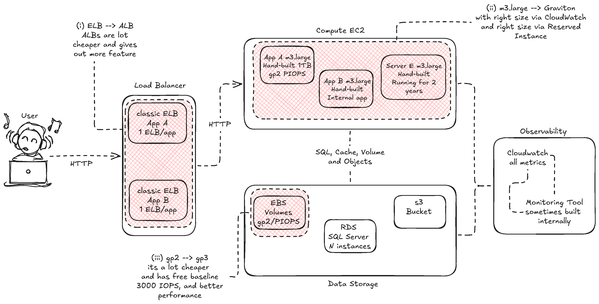

So last week I wrote a tweet in which I said every backend engineer out there should carry an AWS optimization handbook which they wrote all along their experience with AWS costings because it is very usual to companies who are migrating to AWS and rapidly seeing extremely large bills. So, here is my cost optimization handbook which I carry with me everytime I am working with AWS or EC2 instances..
My goto optimizations
Firstly know what's running in the accounts enforce tagging and talk to teams who spin up the workloads then standardize to a limited number of SKUs across the most popular services and acheive high reservation and savings plan coverage for these. Take the trash out always look for abandoned orphaned resources, push team to upgrade their stuff to avoid extended support fees
before you start optimizing anything actually look at where the money is going all though it sounds very much obious but from personal experience I have spent weeks trying to squeeze savings out of EC2 when that wasn't even the problem my advice would by to start with visibility mostly the surprises are always in the services you aren't watching. Also if you are working somewhere which is super early but still coming up with decent scale then ask yourself if you even need full AWS. Sometimes Render, Fly or similar platforms are cheaper and simpler.
Diving a little more deeper
In an organization where I worked I was fortunately skilled enough to cut down some costs on their infrastructure bill from $5,933 to < $1k which was something I am very much proud of till this day :D ... Some of these might be obvious but they clearly weren't to my predecessor.


before any tools the first thing to see in the bill details and perhaps look around in cloudwatch metrics is what are the items that are getting billed the highest in your infrastructure ?? like EC2 is doing what, running instances ?? volumes or the amis or is it the snapshots do exactly similar with s3, is it storage or something else..
list of things which unnecessarily costs and ups your bill exactly for no reason ... custom AMIs, EBS snapshots, the "never expire" cloudwatch log groups while working I found soo much of our old CloudWatch group data provided no value at all, why pay for worthlless data ?? Always set log retention policies and they police themselves.
I wrote my own tool for listing all our servers, databases and caches etc. across all regions and accounts. Ofc this isn't nearly as fully featured as something like Netflix uses, but the bit I used most was simply being able to list resources by cost and continually attcking the mot expensive. The TrustAdvisor in the AWS console wasn't nearly as useful as you might like, it throws up quite a lot of false positives.
Please Question everything ... I found
servers that had been running for 2 years waiting for someone to
install something usefull on them. I took some time pretty much every
day to look over the list of servers, database, cacches and ask about
anything I didn't recognize.
Cost optimization is more of a ownership than just tooling, someone has to look at the bill regularly and ask "whyy did we pay
soo much for this ??" then get specific and ask more detailed
questions like
why does this need that much RAM?? was it sized for real load or for a
guess 18 months ago ??, do we need this data in 1, 3 or 6 months? If
not, a lifecycle rule moves it to cheaper storage or deletes it ...
Right Sizing matters a lot
Most of the servers which had been created by hand as m3.large, simply because "felt righ" for a production server and when checked at the CPU and RAM usage most of the applications ran happily on a small instance. Take some time out and try to locate most of your apps on the same instance here docker would make that job way lot easier than your think. Particularly for internal apps where it doesn't need to scale independently and could tolerate a little downtime if things went wrong.
ALBs > ELBs as it offers a lot of flexibility over the classic one (okkay you might ask but when to choose what ??) if unsure you most likely need an ALB for http/https and NLB for tcp or tcp-with-ssl or UDP. ELB if you need something that it offers that isn't covered by the other two ... some note on this load balancers by aws ELB is an older term and nowadays it just refers to the whole family of load balancers What we used to call an ELB is now called a 'Classic Load Balancer' used for legacy stuff that has yet to be moved over to one of the newer ones. Confusing? Yes, it is. It should also be mentioned there is another type of load balancer, the Gateway load balancer, but this would only be used to integrate a virtual network appliance, such as an Intrusion Detection System (IDS)


there will come a time where you have to rewrite some of your small apps as lambdas ... (I did a blog on that topic too serverless 101) particularly those that simply involved receiving a http request and putting data into a database somewhere
Also some quick notes on automating stuffs any staging or test environments that were kept running were put on a schedule to turn off outside office hours.
hope you had a great time learning new stuff from this handbook :D